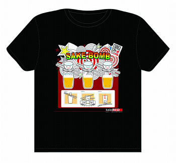
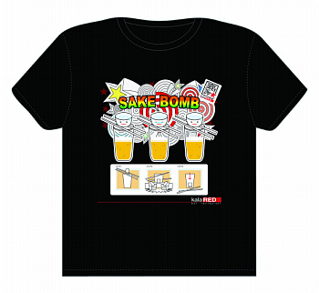
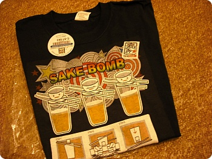
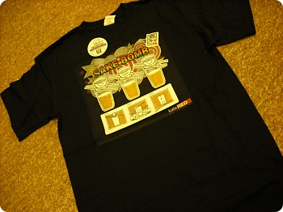
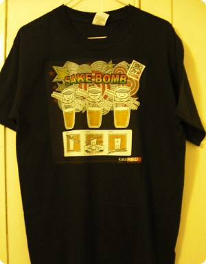
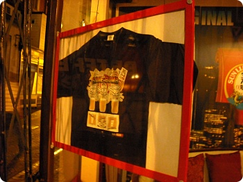

평소에 T셔츠 디자인 해보고싶다는 생각은 많이했는데
실행에 못옮기고 있던와중 엉뚱하게 스타트를 끊게되었다;;;
SAKE BOMB이라고 한국폭탄주 비슷한거 같은데;;
밑에는 맥주→컵위에 젓가락 얹고→위에 일본주
SAKE BOMB!! 이라고 세번 외친후에 주먹으로 테이블을 쳐서
위에 작은잔을 맥주속에 빠트린후 누가빨리 마시나 뭐 그런거 ㅡㅡ;;
저거 한잔에 ￡3.50임;;;;
여튼 디자인의뢰(?)가 들어와서
꼼지락꼼지락 시간날때마다 만든후
수정에 수정을 거친후 나온 티셔츠;;
원래는 그냥 가게 벽에 붙이거나 메뉴판으로 쓸 포스터 디자인을 원하셨는데
(A4사이즈 정도의^^;;;) 디자인 시안을 보시더니 갑자기
티셔츠로 만들고싶어!!! 라고 하셨다능^^;;;
그래서 방향 급 선회~^^;;;;
실행에 못옮기고 있던와중 엉뚱하게 스타트를 끊게되었다;;;
SAKE BOMB이라고 한국폭탄주 비슷한거 같은데;;
밑에는 맥주→컵위에 젓가락 얹고→위에 일본주
SAKE BOMB!! 이라고 세번 외친후에 주먹으로 테이블을 쳐서
위에 작은잔을 맥주속에 빠트린후 누가빨리 마시나 뭐 그런거 ㅡㅡ;;
저거 한잔에 ￡3.50임;;;;
여튼 디자인의뢰(?)가 들어와서
꼼지락꼼지락 시간날때마다 만든후
수정에 수정을 거친후 나온 티셔츠;;
원래는 그냥 가게 벽에 붙이거나 메뉴판으로 쓸 포스터 디자인을 원하셨는데
(A4사이즈 정도의^^;;;) 디자인 시안을 보시더니 갑자기
티셔츠로 만들고싶어!!! 라고 하셨다능^^;;;
그래서 방향 급 선회~^^;;;;


로고를 넣었다 뺐다;;
배경색을 넣었다 뺐다 바꿨다가;;
한 9개정도 비스끄무리한걸 만들어갔는데 그중 맘에든 2가지^^
(심지어 학교친구들에게 한 9개샘플을 보여주고
"맘에드는거 골라바바!!" 라고했더니
다들 "뭐가다른건데?" 라고 했.....OTL)
티셔츠 주문했다는 소리를 2주전에 들었는데
요번 금요일날 티셔츠 나왔다는 소식을 들었다;;
(암튼 영국 촘 짱임;;)
요게요게 실크스크린이 아니라 출력해서 다림질하는거라
뒷배경색은 완전 회색;;;
색이 깔끔하지가 않네용 ㅜㅡ
역시 싼게 비지떡;';;;;;
배경색을 넣었다 뺐다 바꿨다가;;
한 9개정도 비스끄무리한걸 만들어갔는데 그중 맘에든 2가지^^
(심지어 학교친구들에게 한 9개샘플을 보여주고
"맘에드는거 골라바바!!" 라고했더니
다들 "뭐가다른건데?" 라고 했.....OTL)
티셔츠 주문했다는 소리를 2주전에 들었는데
요번 금요일날 티셔츠 나왔다는 소식을 들었다;;
(암튼 영국 촘 짱임;;)

SAKE BOMB~!!!!! ㅋㅋㅋ요게요게 실크스크린이 아니라 출력해서 다림질하는거라
뒷배경색은 완전 회색;;;
색이 깔끔하지가 않네용 ㅜㅡ
역시 싼게 비지떡;';;;;;

그래도 첫 자작 티셔츠~와아~~!!! >ㅂ</))
한장 얻어왔습니다 :D
아마 내 잠옷이 될듯;;
아마 내 잠옷이 될듯;;

가게 유리에도 떡~하니 핫핫
뭔가 내가 디자인한 티셔츠를 입고 일하는 모습을 보니까
뿌듯하기도 하고 초금 부크럽기도 하고 그랬다능^^;;;
작업 재미있었어요~^^***
탄력받아서 내 오리지날도 만들고 싶다아아~~
(그전에 과제부터;;; OTL)
뭔가 내가 디자인한 티셔츠를 입고 일하는 모습을 보니까
뿌듯하기도 하고 초금 부크럽기도 하고 그랬다능^^;;;
작업 재미있었어요~^^***
탄력받아서 내 오리지날도 만들고 싶다아아~~
(그전에 과제부터;;; OTL)